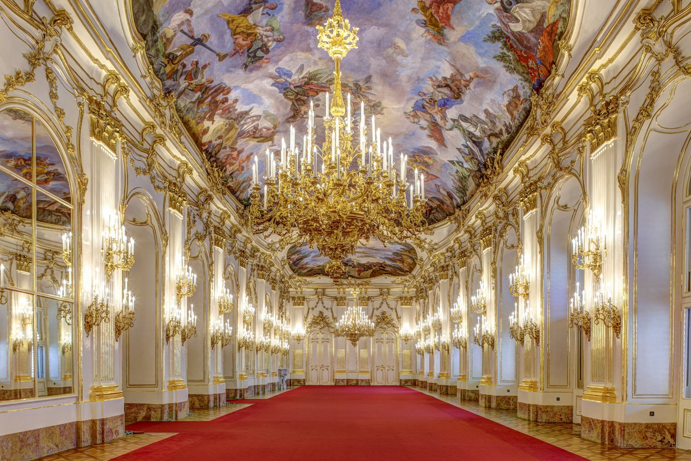

Descubrir Viena
Lugares que no puedes perderte

Patrimonio UNESCOPalacio de Schönbrunn
Residencia imperial de los Habsburgo, este palacio barroco y sus jardines geométricos son uno de los complejos palaciegos más fascinantes de Europa. Sus 1 441 estancias guardan siglos de historia imperial.
Visitar sitio → Arte & Cultura
Arte & Cultura
Palacio del Belvedere
Hogar del célebre El beso de Gustav Klimt, este conjunto palaciego del siglo XVIII combina arquitectura barroca magistral con una colección de arte austriaco que abarca varios siglos de historia.
Visitar sitio →